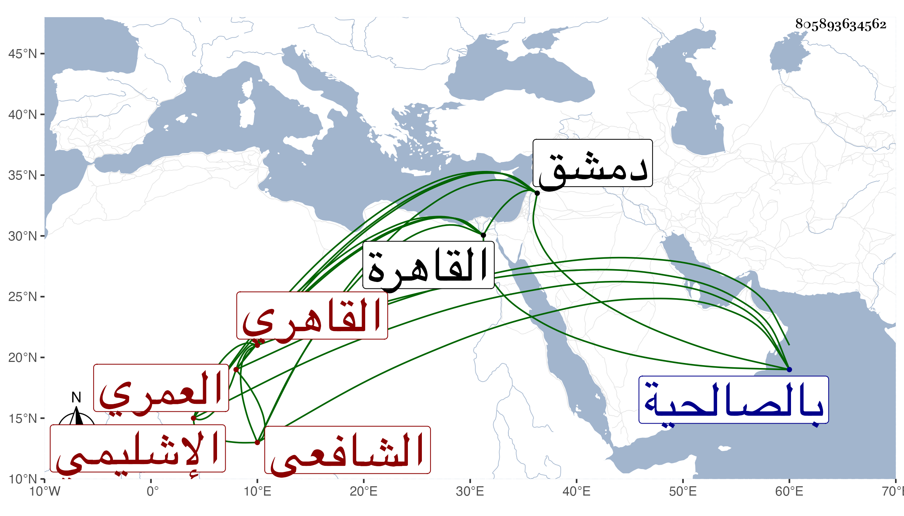

0902Sakhawi.DawLamic.ITO20230111-ara1.EIS1600.805893634562
Biography ID: 805893634562
340
محمد بن عثمان بن عبد الله ويقال أيوب بدل عبد الله وهو أصح أصيل الدين أبو عبد الله بن الفخر أبي عمرو بن النجم العمري فيما قيل الإشليمي ثم القاهري الشافعي والد الشهاب أحمد بن أصيل الماضي . ولد بعد سنة أربعين بإشليم . ولما ترعرع تعانى القرآن ثم اشتغل قليلا في الفقه والعربية وتلا للسبع ، ومن شيوخه في الفقه ابن الملقن والبلقيني ، ورأيت إذن أولهما له بالتدريس والإفتاء ووصفه بالعالم العلامة ذي الفنون أقضى القضاة مفتي المسلمين جمال المدرسين ، وأثنى على صحيح ذهنه وأطال الإجازة وأرخها في سنة ثمانين وشهد عليه التقي الزبيري والشمس الغماري وتكسب بالشهادة ولازم الصدر بن رزين خليفة الحكم فرقاه لنيابة الحكم ثم حسن له الصدر المناوي السعي في القضاء الأكبر حين كان متوليه التقي الزبيري بحيث كان ذلك وسيلة لعود الصدر بعد صرف الزبيري ولرغبتهم في دراهم صاحب الترجمة التي استدانها لذلك عوضوه بقضاء دمشق فوليه في شعبان سنة إحدى وثمانمائة في أواخر دولة الظاهر فباشره قليلا نحو مائة يوم فلم تحمد سيرته ولم يلبث أن مات الظاهر وسعى الأخنائي حتى عاد وصرف هذا ورجع إلى القاهرة ونالته محنة بسبب الديون التي تحملها وسجن بالصالحية مدة ثم أطلق ، وكان له استحضار ليسير من السيرة النبوية ومن شرح مسلم فكان يلقى درسه غالبا من ذلك لكونه لا يستحضر من الفقه إلا قليلا ، ولذا لما دخل على البلقيني بعد ولايته قال له :
| ما أنت بالحكم الترضي حكومته | ولا الأصيل ولا ذي الرأي والجدل |
مات في أواخر ذي الحجة سنة أربع عن ستين سنة فأكثر ذكره شيخنا في إنبائه باختصار عن هذا وكذا المقريزي في عقوده .
